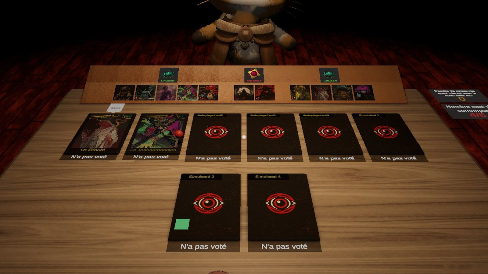

Pendant un playtest, F8 ouvre une petite fenêtre : le joueur écrit ce qui s'est passé, une capture de l'écran est prise au moment de l'appui, et l'instant est marqué dans les logs en ligne. Claude reçoit l'alerte sur Discord avec la capture, le texte et la minute exacte de la partie de chaque joueur.
Images : vraie capture du jour au vote. Les fenêtres sont redessinées ici avec les matières du jeu (parchemin de T21, panneau noir du menu pause). La fenêtre ne met pas le jeu en pause (partie en réseau) ; elle existe seulement dans les builds de playtest, jamais dans le jeu publié. Les cadres réagissent : écris, puis Envoyer.
Wouh vient d'appuyer sur F8 pendant le vote du jour 2. La capture est celle de l'instant de l'appui.
Le parchemin de la nuit, posé à droite : la capture en photo, des lignes pour écrire, Envoyer et Annuler écrits à l'encre. On voit encore la table et les cartes.

Même panneau noir que le menu pause (son, vocal) : cohérent avec les menus actuels, sans matière nouvelle. Au centre, il cache le milieu de la table.
Une seule ligne en bas de l'écran, la capture en vignette : toute la table reste visible, on peut continuer à suivre le vote en écrivant. Moins de place pour un long récit.
La fenêtre se ferme. Ce que voit Wouh juste après.
Un petit papier à la place de la fenêtre, deux secondes, puis il s'efface.
Le papier donne l'heure marquée dans les logs : Wouh peut la recopier sur Discord, et on retrouve la minute exacte même s'il écrit plus tard.
La fenêtre se ferme sur un bruit de papier, rien ne reste à l'écran.
F8 est libre aujourd'hui. Une autre touche, ou aussi une entrée dans le menu pause ?
Rien d'autre à l'écran ; les testeurs connaissent la touche (annoncée sur Discord avec la build).
« Signaler un bug » ajouté au menu pause, pour qui a oublié la touche.